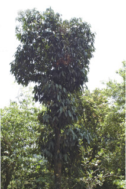

Images :



| Habit : | Trees up to 14 m tall. |
| Leaves : | Leaves simple , opposite , decussate , drooping ; petiole stout, angular , horizontally rugose , sheathing at base, 1-3 cm long, glabrous ; lamina 10-35 x 4-12 cm, linear-oblong to oblong , sometimes lanceolate , apex acute or slightly acuminate , base rounded or slightly attenuate , margin slightly revolute , thickly coriaceous , drying yellowish or brownish beneath; secondary_nerves many, joining into intramarginal vein ; tertiary_nerves obscure . |
| Inflorescence / Flower : | Flowers dioecious , in fascicles , axillary or on older branches . |
| Fruit and Seed : | Berry , to 6.5 cm diameter, subglobose , 1-2 seeded . |